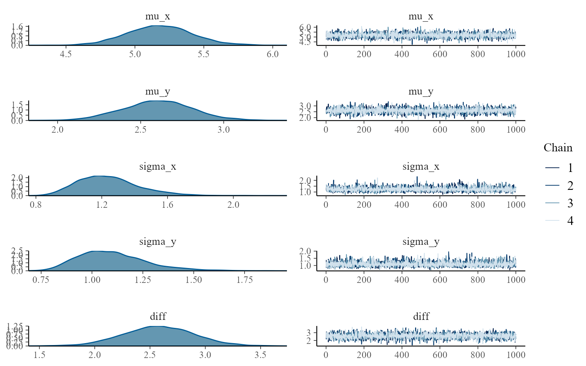

2章
2-1章：Rの基本
1. 目的と概要
- Rインストール
- 基本事項
- 応用
2. Rのインストール
3. RStudioのインストール
4. RStudioの使い方
- プロジェクトの作成
- スクリプトの作成
5. 変数
- ’<-’による代入
- print()や変数名で表示
- 因子型:
6. 関数
- 引数
7. ベクトル
- vector <- c(1,2,3,4,5)
- 1:10 等差数列
8. 行列
mtrx<-matrix(
data=1:10,
nrow=2,
byrow=F
)
rownames(mtrx)<-c('row1','row2')
colnames(mtrx)<-c('c1','c2','c3','c4','c5')
print(mtrx)## c1 c2 c3 c4 c5
## row1 1 3 5 7 9
## row2 2 4 6 8 109. 配列
- arry<-array(data=1:30, dim=c(3,5,2))
10. データフレーム
- 列ごとにっデータの種類を変えられる
- df <-data.frame()
- nrow(df)
11. リスト
- さらに上位構造としてのリスト
- lst <- list( a=c(1,2,3), b=mtrx, c=df )
12. データの抽出
- []での抽出
- a<-matrix(data=1:10,nrow=2) でa[,1]のようにすれば特定列のみ、特定行のみ抽出
- a[1, 2:3]のようなことも可能
- dim()で要素数、dimnamesで要素名を調べる
- 行名や列名でも指定可能
- データフレームの場合、$で列名を指定可能
- head(df,n)、データフレームdfの先頭n行を表示
- listでも$を使える
13. 時系列データ(ts)
- ts()
df2 <- data.frame(
data=1:24
)
ts2<-ts(
df2, # 対象データ
start = c(2010,1), #開始年月
frequency=12 #頻度
)
print(ts2)## Jan Feb Mar Apr May Jun Jul Aug Sep Oct Nov Dec
## 2010 1 2 3 4 5 6 7 8 9 10 11 12
## 2011 13 14 15 16 17 18 19 20 21 22 23 2414. ファイルからのデータ読み込み
- read.csv()
15. 乱数の生成
- rnorm(n=, mean=, sd=): 正規分布に従う乱数
- set.seed(): seedを設定すれば同じ乱数を生成できる
16. 繰り返し構文とforループ
- for (i in 1:3){}のような形
17. 外部パッケージの活用
- install.packages()
2-2章: データの要約
2. 度数・度数分布・ヒストグラム
- hist()
fish<-read.csv('2-2-1-fish.csv')
hist(fish$length)
3. カーネル密度推定
- ヒストグラムを滑らかに
- density()
fish<-read.csv('2-2-1-fish.csv')
plot(density(fish$length, adjust=1))4. 算術平均
- mean()
5. 中央値・四分位点・パーセント点
- median()
- quautile(data, c(v1, v2))
6. 共分散とピアソンの積率相関係数
- 共分散: \(\frac{1}{N} \Sigma^N_{i=1} (x_i-\bar{x})(y_i-\bar{y}))\)
- ピアソンの積率相関係数: \(\rho_{xy}=\frac{\Sigma^N_{i=1}(x_i-\bar{x})(y_i-\bar{y})}{\sqrt{\{\Sigma^N_{i=1}(x_i-\bar{x})^2\}\{\Sigma^N_{i=1}(y_i-\bar{y})^2\}}}\)
- cor(varx, vary)
7. 自己共分散・自己相関係数・コレログラム
- jikosoukannkeisuu: 時系列データにおける過去のデータとの相関
- 1次：1時点前との相関
- 2次：2時点前との相関
- \(\frac{1}{N}\Sigma^N_{i=1}(y_t-\bar{y})(y_{t-1}-\bar{y})\)
- acf()
acf(Nile)
2-3章 ggplot2によるデータの可視化
2. ggplot2の基本
- データフレームにする
- ggolot関数でグラフのベースを作る
- ベースにグラフを追加していく
- グラフタイトルなどを追加していく
3. データの読み込み
4. ヒストグラムとカーネル密度推定
5. グラフの重ね合わせと一覧表示
library('ggplot2')## Warning in register(): Can't find generic `scale_type` in package ggplot2 to
## register S3 method.fish <- read.csv('2-2-1-fish.csv')
head(fish, n=3)## length
## 1 8.747092
## 2 10.367287
## 3 8.328743ggplot(data=fish, mapping=aes(x=length))+geom_histogram(alpha=0.5, bins=20)+labs(title='ヒストグラム')
fish <- read.csv('2-2-1-fish.csv')
head(fish, n=3)## length
## 1 8.747092
## 2 10.367287
## 3 8.328743ggplot(data=fish, mapping=aes(x=length, y=..density..))+geom_histogram(alpha=0.5, bins=20)+geom_density(size=1.5)+labs(title='ヒストグラム')
library(gcookbook)
library(gridExtra)
p_hist<-ggplot(data=fish, mapping=aes(x=length))+geom_histogram(alpha=0.5, bins=20)+labs(title="ヒストグラム")
p_density<-ggplot(data=fish, mappin=aes(x=length))+geom_density(size=1.5)+labs(title="カーネル密度推定")
grid.arrange(p_hist, p_density, nrow=2)+theme(plot.title=element_text(family="Hirakaku"))
## NULL3.6 箱ひげ図とバイオリンプロット
- 箱ひげ図：四分位点、中央値 geom_boxplot
- バイオリンプロット geom_violin
3.7 散布図
- 2変数間の関係 geom_point
3.8 折れ線グラフ
- 時系列データ geom_line
2-3の補足：ggplot2の考え方(Rグラフィックブック付録A)
wideフォーマットとlongフォーマット
- 属性を縦と横に配置した表: wideフォーマット
library(gcookbook)
simpledat## A1 A2 A3
## B1 10 7 12
## B2 9 11 6* データが複数の列に入る- 1種類のデータは1列にまとまるべき
- reshapeパッケージ、melt()
library(reshape2)
longdat<-melt(simpledat)
longdat## Var1 Var2 value
## 1 B1 A1 10
## 2 B2 A1 9
## 3 B1 A2 7
## 4 B2 A2 11
## 5 B1 A3 12
## 6 B2 A3 6ggplotの用語
- データ：視覚化の対象、変数で構成される
- 幾何オブジェクト：描画されるもの。データを表現したもの。
- エステティック属性：幾何オブジェクトの視覚的プロパティ（x, yの位置、線の色など）
- マッピング：「データの値をエステティック属性にマッピングする」
- スケール：データ空間の値とエステティック空間の値との関係。
- ガイド：目盛りやラベル
基本的な使い方
- ggplot(データ, エステティック属性)+描画オブジェクト
- ggplot(longdat, aes(x=xval, y=yval))
- xvalがx軸に、yvalがy軸にマッピングされる
- geom_point()
- 上のものに幾何オブジェクトを足すと描画できる。この例では散布図。
- geom_point(aes(colour=group))
- このようにエステティック属性としてcolourを指定すると指定した属性を色にマッピングできる。
- +scale_x_continuous(limits=c(0,8))
- xの範囲を広げる
- print(オブジェクト）
- オブジェクトを明示的に表示
- ここまでの例。
- ggplot(longdat, aes(x=xval, y=yval))
library(ggplot2)
dat <- data.frame(xval=1:4,yval=c(3,5,6,9), group=c("A", "B", "A", "B"))
p<-ggplot(dat,aes(x=xval,y=yval))
p2<-p+geom_point(aes(colour=group))
p2+scale_x_continuous(limits=c(0,8))
print(p2)
2-4章 Stanの基本
2. Stanのインストール
- done
3. サンプルとMCMCサンプル
- サンプル：抽出した標本
- MCMCサンプル：MCMCから得た乱数
4. ここで推定するモデルの構造
- ビールの売り上げ（1部5章5.5節）
- 売り上げ（単位：万円）を記録したデータ100個
- 売り上げデータは正規分布に従う
- 売り上げ平均\(\mu\), ばらつき\(\sigma\)
- \(sales \sim Normal(\mu, \sigma^2)\)
5. RとStan
- この本では
- R: 基本的なデータ処理
- Stan: MCMC
- Stanコード
- 拡張子stan
- textファイルを拡張子stanで保存
- RStudioでstanファイルを作成してもOK.構造が予め用意されている。
- この本でのベイズ統計モデリングデータ分析
- Rファイル
- Stanファイル（MCMC用）資料ではオレンジ色枠
- 標本が格納されたcsvファイル
6. Stanファイルの書き方
- 基本的な構造
- dataブロック: データ、サンプルサイズ
- parameterブロック：事後分布を得るパラメータ一覧
- modelブロック：事前分布、尤度
- 事前分布を指定しないと\((-\infty, \infty)\)の一様分布
7. Stanファイルの実装例
- 2-4-1-calc-mean-variance.stanというファイル名で作成
8. Rファイル実装の流れ
- 2-4-Stnの基本.Rを作成
- パッケージ読み込みなどの準備
- データ読み込みと確認
- list形式でデータをまとめる
- Stant連携、MCMC実行
- 結果確認
- 収束も確認
9. 分析の準備
- rstan_options(auto_write=TRUE)
- .rdsファイル生成
- 再度のコンパイルを不要にする
- options(mc.cores=)
- 計算の並列化。コンピュータのコア数に応じて指定してくれる。
- 基本的にどちらもいつも指定する
10. データ読み込み
- read.csv
- この例では確認は省略
11. list形式でデータをまとめる
- Stanファイルのデータブロックに必要なデータ数Nとデータsalesをlistにしておく
12. Stanと連携してMCMC実行
- stan関数
- 引数はP118の通り
- 実際にはMCMCサンプルは毎回異なるが、seed=1を指定することで固定。
library(rstan)## 要求されたパッケージ StanHeaders をロード中です## rstan (Version 2.21.3, GitRev: 2e1f913d3ca3)## For execution on a local, multicore CPU with excess RAM we recommend calling
## options(mc.cores = parallel::detectCores()).
## To avoid recompilation of unchanged Stan programs, we recommend calling
## rstan_options(auto_write = TRUE)rstan_options(auto_write=TRUE)
options(mc.cores=parallel::detectCores())
file_beer_sales_1 <- read.csv("2-4-1-beer-sales-1.csv")
sample_size<-nrow(file_beer_sales_1)
data_list<-list(sales=file_beer_sales_1$sales, N=sample_size)
mcmc_result<-stan(
file="2-4-1-calc.mean-variance.stan",
data=data_list,
seed=1,
chains=4,
iter=2000,
warmup=1000,
thin=1
)13. 結果の確認
- print()でmcmcの戻り値を表示
- 求めるパラメータ, mu, sigma, lp__:対数事後確率
print(mcmc_result, probs=c(0.025,0.5,0.975))## Inference for Stan model: 2-4-1-calc.
## 4 chains, each with iter=2000; warmup=1000; thin=1;
## post-warmup draws per chain=1000, total post-warmup draws=4000.
##
## mean se_mean sd 2.5% 50% 97.5% n_eff Rhat
## mu 102.22 0.03 1.83 98.61 102.23 105.79 3283 1
## sigma 18.19 0.02 1.27 15.93 18.12 20.98 2758 1
## lp__ -336.43 0.02 0.96 -338.94 -336.13 -335.48 1905 1
##
## Samples were drawn using NUTS(diag_e) at Thu Jan 27 11:16:21 2022.
## For each parameter, n_eff is a crude measure of effective sample size,
## and Rhat is the potential scale reduction factor on split chains (at
## convergence, Rhat=1).14. 収束の確認
- traceplot関数でstan関数の戻り値を処理
- 4回の結果（4つのチェーン）が重なっていればOK
- traceplot(mcmc_result, inc_warmup=T)
- バーンイン期間も表示
traceplot(mcmc_result)
15. ベクトル化
- \(sales[N] \sim normal(mu, sigma)\) をベクトルにする
- \(sales \sim normal(mu, sigma)\)
- わずかに結果が変わる
16. モデルの図式化
- モデルの構造を図式化
- グラフィカルモデル
- 実際のデータ：四角形
- 確率分布：円
- 確率的な関係：波線
- 確定的関係：実線
2-6. Stanコーディングの詳細
2. Stanファイルの構造
- Stanファイルの構成
- function
- data
- transformed data
- parameters
- transformed parameters
- model
- generated quntities
3. 変数の宣言
- 型と範囲
- int N
- real beta;
- real<lower=0> beta;
- int<lower=0, upper=1> range;
- ベクトル、配列の宣言
- ベクトル、行列
- 実数値型
- vector[3] retu;
- row_vector[10] gyou;
- matrix[3,2] mat;
- 配列
- ベクトルより柔軟、データ型を複数持てる
- int w[10];
- real x[3,4];
- vector[4] Y[2]; //4要素のベクトルを2つ持つ配列Y
- matrix[3,4] Z[5,6]; //3x4の行列を要素に持つ5x6の配列Z
- ベクトル、行列
4. 代入
- transformed dataブロックやtransformed parametersブロック
- = 代入演算子
5. サンプリング文
- modelブロック
- ビール売上の例
- 売上平均値のパラメータ\(\mu\), ばらつき\(\sigma^2\)
- 売上salesは平均\(\mu\), ばらつき\(\sigma^2\)の正規分布からサンプリングされたと想定
- \(sales \sim Normal(\mu, \sigma^2)\)
- N: サンプルサイズとして
- model{ for (i in 1:N){ sales[i] ~ normal(mu, sigma) } }
- 左辺ではデータでも、未知のパラメータでもOK
- muとsigmaの事前分布は指定できる
- model{ mu ~ normal(0, 1000000); sigma ~ normal(0, 1000000); for (i in 1:N){ sales[i] ~ normal(mu, sigma); } }
- 事前分布を変えたときに結果（＝事後分布）がどう変わってくるかの確認作業：感度分析
6. 弱情報事前分布の設定
- パラメータの範囲が”ある程度”分かっているとき
- “やや狭い”事前分布
- 例えば-5から5が想定されるとして、
- uniform(-5, 5)のように範囲が厳格に決まった一様分布よりも
- normal(0, 5)のような緩やかに範囲が決められる決め方が良い
- t分布が使われたりもする
- Prior Choice Recommendations参照
- 例えば-5から5が想定されるとして、
======= # 2-5章 MCMCの結果の評価
2. MCMCの実行
- 4章と同じ解析を実行
mcmc_result<-stan(
file="2-4-1-calc.mean-variance3.stan",
data=data_list,
seed=1,
chains=4,
iter=2000,
warmup=1000,
thin=1
)3. MCMCサンプルの抽出
- rstan::extract(): stanfitクラスからmcmcサンプルを抽出する
- mcmc_sample <- rstan::extract(mcmc_result, permuted=FALSE)
- 抜き出されたmcmc_sampleオブジェクトはarrayクラス、dimsは1000（iter数-wamup数), 4(chans数), 3(mu, sigma, lp__)となる。
- dim_names(mcmc_samples)で確認できる
- mcmc_sample[]で要素を見ることができる
- mcmc_sample[,,mu]だと\(\mu\)のMCMCサンプル全てを取り出せる
mcmc_sample<-rstan::extract(mcmc_result, permuted=FALSE)
class(mcmc_sample)## [1] "array"dim(mcmc_sample)## [1] 1000 4 3dimnames(mcmc_sample)## $iterations
## NULL
##
## $chains
## [1] "chain:1" "chain:2" "chain:3" "chain:4"
##
## $parameters
## [1] "mu" "sigma" "lp__"mcmc_sample[c(1:8),"chain:1","mu"]## [1] 104.0878 104.4901 102.4625 101.3802 102.5435 104.7143 100.2602 104.0725dim(mcmc_sample[,,"mu"])## [1] 1000 4class(mcmc_sample[,,"mu"])## [1] "matrix" "array"4. MCMCサンプルの代表値の計算
- 事後分布の代表値の計算
mu_mcmc_vec <- as.vector(mcmc_sample[,,"mu"])
median(mu_mcmc_vec)## [1] 102.2262mean(mu_mcmc_vec)## [1] 102.2221quantile(mu_mcmc_vec, probs=c(0.025, 0.975))## 2.5% 97.5%
## 98.6053 105.79185. トレースプロットの描画
- MCMCサンプルをもとにトレースプロットの描画
library(ggfortify)
autoplot(ts(mcmc_sample[,,"mu"]),
facets = F,
ylab = "mu",
main= "トレースプロット") 6. ggplot2による事後分布の可視化 * MCMCサンプルをまとめる＝パラメータの事後分布
6. ggplot2による事後分布の可視化 * MCMCサンプルをまとめる＝パラメータの事後分布
mu_df <- data.frame(mu_mcmc_sample <- mu_mcmc_vec)
ggplot(data=mu_df, mapping=aes(x=mu_mcmc_sample))+geom_density(size=1.5) ## 7. bayesplotによる事後分布の可視化 * bayesplot便利
## 7. bayesplotによる事後分布の可視化 * bayesplot便利
library(rstan)
rstan_options(auto_write=TRUE)
options(mc.cores=parallel::detectCores())
library(bayesplot)## This is bayesplot version 1.8.1## - Online documentation and vignettes at mc-stan.org/bayesplot## - bayesplot theme set to bayesplot::theme_default()## * Does _not_ affect other ggplot2 plots## * See ?bayesplot_theme_set for details on theme settingmcmc_hist(mcmc_sample, parc=c("mu", "sigma"))## Warning: The following arguments were unrecognized and ignored: parc## `stat_bin()` using `bins = 30`. Pick better value with `binwidth`.
mcmc_combo(mcmc_sample, parc=c("mu","sigma")) ## 8. bayesplotによる事後分布の範囲の比較 ## 9. bayesplotによるMCMCサンプルの自己相関の評価 * コレログラムも描ける
## 8. bayesplotによる事後分布の範囲の比較 ## 9. bayesplotによるMCMCサンプルの自己相関の評価 * コレログラムも描ける
10. 事後予測チェックの概要
- 推定されたモデルの総合的評価方法
- 例えば、仮定した事柄が現実的だったかどうか
- 事後予測チェックとは？
- 統計モデル：観測したデータを生み出す確率的な過程を簡潔に記述したもの
- ってことは、統計モデルをうまく推定できているなら、データとよく似たデータを生成できるはず
- モデルにしたがって観測データを擬似的に生成=事後予測分布/事後分布
- データと事後予測分布を比べる
- その方法の一つとしての「図示」
- 統計モデル：観測したデータを生み出す確率的な過程を簡潔に記述したもの
11. 事後予測チェックの対象となるデータとモデル
- 小動物の発見個体数
- 草原の中にランダムに個体が分布
- 試行回数が大きく、発生確率が小さい二項分布＝ポアソン分布
- 間違った分布として正規分布も考えてみる
animal_num<-read.csv("2-5-1-animal-num.csv")2-6. Stanコーディングの詳細
2. Stanファイルの構造
- Stanファイルの構成
- function
- data
- transformed data
- parameters
- transformed parameters
- model
- generated quntities
3. 変数の宣言
- 型と範囲
- int N
- real beta;
- real<lower=0> beta;
- int<lower=0, upper=1> range;
- ベクトル、配列の宣言
- ベクトル、行列
- 実数値型
- vector[3] retu;
- row_vector[10] gyou;
- matrix[3,2] mat;
- 配列
- ベクトルより柔軟、データ型を複数持てる
- int w[10];
- real x[3,4];
- vector[4] Y[2]; //4要素のベクトルを2つ持つ配列Y
- matrix[3,4] Z[5,6]; //3x4の行列を要素に持つ5x6の配列Z
- ベクトル、行列
4. 代入
- transformed dataブロックやtransformed parametersブロック
- = 代入演算子
5. サンプリング文
- modelブロック
- ビール売上の例
- 売上平均値のパラメータ\(\mu\), ばらつき\(\sigma^2\)
- 売上salesは平均\(\mu\), ばらつき\(\sigma^2\)の正規分布からサンプリングされたと想定
- \(sales \sim Normal(\mu, \sigma^2)\)
- N: サンプルサイズとして
- model{ for (i in 1:N){ sales[i] ~ normal(mu, sigma) } }
- 左辺ではデータでも、未知のパラメータでもOK
- muとsigmaの事前分布は指定できる
- model{ mu ~ normal(0, 1000000); sigma ~ normal(0, 1000000); for (i in 1:N){ sales[i] ~ normal(mu, sigma); } }
- 事前分布を変えたときに結果（＝事後分布）がどう変わってくるかの確認作業：感度分析
6. 弱情報事前分布の設定
- パラメータの範囲が”ある程度”分かっているとき
- “やや狭い”事前分布
- 例えば-5から5が想定されるとして、
- uniform(-5, 5)のように範囲が厳格に決まった一様分布よりも
- normal(0, 5)のような緩やかに範囲が決められる決め方が良い
- t分布が使われたりもする
- Prior Choice Recommendations参照
- 例えば-5から5が想定されるとして、
7. 対数密度加算文
- サンプリング文は対数密度加算文という形式でも実装可能
- 例えばmu, sigmaに従う正規分布にしたがって得られるデータ
- 対数密度加算文では
- model{ for (i in 1:N) target += normal_lpdf(sales[i]|mu, sigma); }
- targetに対して対数確率密度関数(log probability density function)を加算してるということ
- 離散型の場合、lpmf(log probability mass function)
- 事前分布として広い正規分布を与える場合
- model{ target += normal_lpdf(mu|0, 1000000); target += normal_lpdf(sigma|0, 1000000);
- ここでtargetはlp__(対数事後確率) }
- model{ target += normal_lpdf(mu|0, 1000000); target += normal_lpdf(sigma|0, 1000000);
8. 平均値の差の評価とgenerated quantitiesブロック
- モデル推定とは独立に乱数を得たい
library(ggplot2)
library(rstan)
rstan_options(auto_write=TRUE)
options(mc.cores=parallel::detectCores())
file_beer_sales_ab<-read.csv("2-6-1-beer-sales-ab.csv")
ggplot(data=file_beer_sales_ab, mapping=aes(x=sales, y=..density.., color=beer_name, fill=beer_name))+geom_histogram(alpha=0.5,position="identity")+geom_density(alpha=0.5, size=0)## `stat_bin()` using `bins = 30`. Pick better value with `binwidth`.
sales_a<-file_beer_sales_ab$sales[1:100]
sales_b<-file_beer_sales_ab$sales[101:200]
data_list_ab<-list(
sales_a=sales_a,
sales_b=sales_b,
N=100
)
mcmc_result_6<-stan(file="2-6-5-difference-mean.stan",
data=data_list_ab,
seed=1
)
print(mcmc_result_6, probs=c(0.025, 0.5, .0975))## Inference for Stan model: 2-6-5-difference-mean.
## 4 chains, each with iter=2000; warmup=1000; thin=1;
## post-warmup draws per chain=1000, total post-warmup draws=4000.
##
## mean se_mean sd 2.5% 50% 9.75% n_eff Rhat
## mu_a 102.22 0.03 1.84 98.64 102.22 99.89 4352 1
## sigma_a 18.19 0.02 1.30 15.84 18.12 16.58 3742 1
## mu_b 168.88 0.05 2.92 163.14 168.91 165.15 3627 1
## sigma_b 29.11 0.03 2.09 25.37 28.96 26.47 4374 1
## diff 66.66 0.05 3.50 59.84 66.67 62.19 4094 1
## lp__ -719.42 0.03 1.45 -723.21 -719.07 -721.34 2249 1
##
## Samples were drawn using NUTS(diag_e) at Thu Jan 27 11:16:39 2022.
## For each parameter, n_eff is a crude measure of effective sample size,
## and Rhat is the potential scale reduction factor on split chains (at
## convergence, Rhat=1).練習問題
- 異なる分散を仮定
library(rstan)
rstan_options(auto_write=TRUE)
options(mc.cores=parallel::detectCores())
pdata<-read.csv("data_if.csv")
xdata<-pdata[which(pdata$con=="X"),]
ydata<-pdata[which(pdata$con=="Y"),]
ggplot(data=pdata, mapping=aes(x=syakou, y=..density.., color=con, fill=con))+geom_histogram(alpha=0.5, position="identity")+geom_density(alpha=0.5, size=0)## `stat_bin()` using `bins = 30`. Pick better value with `binwidth`.
list_xy<-list(datax=xdata[,2],datay=ydata[,2],Nx=length(xdata[,2]),Ny=length(ydata[,2]))
mcmc_p_res <- stan(file="2-6-5-pdata.stan",
data=list_xy,
seed=1
)
print(mcmc_p_res)## Inference for Stan model: 2-6-5-pdata.
## 4 chains, each with iter=2000; warmup=1000; thin=1;
## post-warmup draws per chain=1000, total post-warmup draws=4000.
##
## mean se_mean sd 2.5% 25% 50% 75% 97.5% n_eff Rhat
## mu_x 5.19 0.00 0.24 4.73 5.03 5.19 5.35 5.66 3376 1
## sigma_x 1.24 0.00 0.18 0.93 1.11 1.22 1.34 1.65 3326 1
## mu_y 2.60 0.00 0.22 2.17 2.46 2.61 2.75 3.05 3890 1
## sigma_y 1.10 0.00 0.17 0.83 0.97 1.07 1.20 1.49 3012 1
## diff 2.58 0.01 0.32 1.94 2.37 2.58 2.80 3.22 3643 1
## lp__ -32.31 0.04 1.48 -35.98 -33.01 -31.98 -31.25 -30.48 1552 1
##
## Samples were drawn using NUTS(diag_e) at Thu Jan 27 11:16:54 2022.
## For each parameter, n_eff is a crude measure of effective sample size,
## and Rhat is the potential scale reduction factor on split chains (at
## convergence, Rhat=1).library(bayesplot)
mcmc_combo(mcmc_p_res, pars=c("mu_x", "mu_y", "sigma_x", "sigma_y", "diff"))
stan_hist(mcmc_p_res)## `stat_bin()` using `bins = 30`. Pick better value with `binwidth`.- 同じ分散を仮定
library(rstan)
library(ggplot2)
rstan_options(auto_write=TRUE)
options(mc.cores=parallel::detectCores())
pdata<-read.csv("data_if.csv")
xdata<-pdata[which(pdata$con=="X"),]
ydata<-pdata[which(pdata$con=="Y"),]
ggplot(data=pdata, mapping=aes(x=syakou, y=..density.., color=con, fill=con))+geom_histogram(alpha=0.5, position="identity")+geom_density(alpha=0.5, size=0)## `stat_bin()` using `bins = 30`. Pick better value with `binwidth`.
list_xy<-list(datax=xdata[,2],datay=ydata[,2],Nx=length(xdata[,2]),Ny=length(ydata[,2]))
mcmc_p_res <- stan(file="2-6-5-pdata2.stan",
data=list_xy,
seed=1
)
print(mcmc_p_res)## Inference for Stan model: 2-6-5-pdata2.
## 4 chains, each with iter=2000; warmup=1000; thin=1;
## post-warmup draws per chain=1000, total post-warmup draws=4000.
##
## mean se_mean sd 2.5% 25% 50% 75% 97.5% n_eff Rhat
## mu_x 5.18 0.00 0.22 4.75 5.04 5.18 5.33 5.60 3458 1
## sigma 1.15 0.00 0.12 0.94 1.06 1.13 1.22 1.41 3170 1
## mu_y 2.60 0.00 0.23 2.14 2.45 2.60 2.76 3.06 3492 1
## diff 2.58 0.01 0.32 1.94 2.37 2.58 2.79 3.19 3575 1
## lp__ -32.07 0.03 1.26 -35.38 -32.66 -31.74 -31.15 -30.63 1686 1
##
## Samples were drawn using NUTS(diag_e) at Thu Jan 27 11:17:10 2022.
## For each parameter, n_eff is a crude measure of effective sample size,
## and Rhat is the potential scale reduction factor on split chains (at
## convergence, Rhat=1).